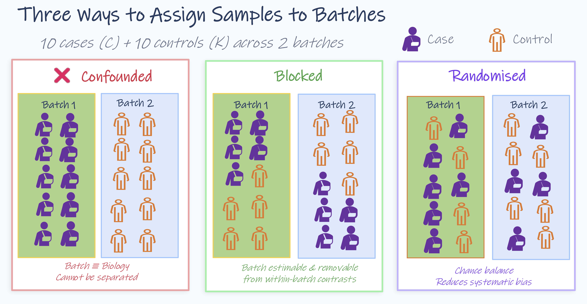
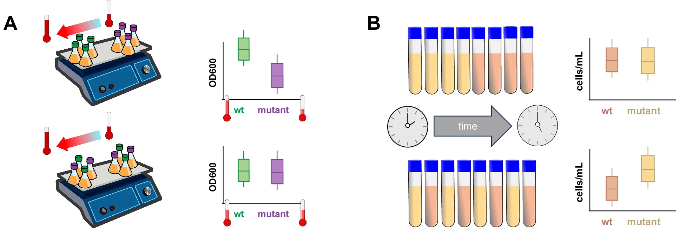
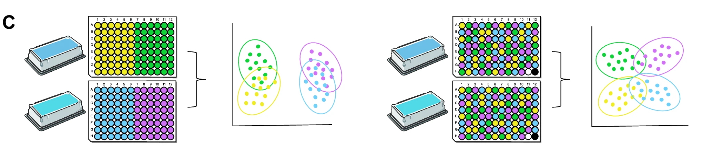
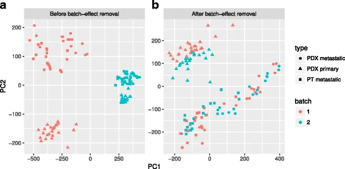
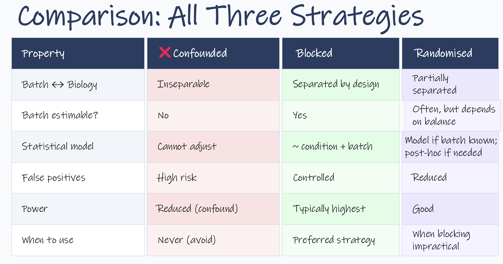

Confounding: when a variable travels with your groups
One failure, many faces
Module 1 listed sampling bias (Pitfall 1) and batch effects (Pitfall 4) separately, because they happen at different points in a study. Structurally they are the same failure: a variable you are not studying ends up aligned with the groups you are comparing.
When that happens the two are confounded. The dataset contains no case where they come apart, so no comparison within it can attribute a difference to one rather than the other.
The figure below is the one from Module 1, Pitfall 4, and it is deliberately the same picture. Batch is simply the easiest version of this to draw.

Module 1 read it as a batch problem: on the left, cases and controls processed in separate batches, and nothing in the data distinguishes a separation by batch from a separation by disease. On the right, both groups appear in both batches, so the batch effect is estimable and can be adjusted for.
Read it again with the word "batch" covered up. Nothing in either panel depends on what the factor is. Substitute any of these and it is the same figure:
| Factor | The version of this you'll actually meet |
|---|---|
| Sex | Cases recruited male-skewed, controls female-skewed |
| Age / recruitment source | Each group drawn from a different clinic or cohort |
| Collection year | Cases collected in 2021, controls added in 2024 |
| Site | Multi-site study where one site contributed most of one group |
| Housing unit | Treatment in one cage or tank, control in another |
| Plate position | Cases in columns 1–4, controls in 5–8 |
| Operator / sequencing run | One group processed by one person, or on one flow cell |
The unrecoverable rule
A factor perfectly aligned with your biological groups is not estimable from the data, because the data contains no case where the two vary independently. More samples, deeper sequencing, and better correction methods do not change this. The fix exists only before samples are processed.
Two core tools, and which one you need
There are several ways to keep a variable from aligning with your groups; matching, stratification, balanced sampling but they are variations on two underlying tools. What separates the two is one question: can you name the factor in advance?
Blocking is for variation you can name and record: batch, site, sex, plate. You build balance in deliberately, ensuring every biological group appears at every level of the factor.
Randomisation is for variation you cannot name. Reagent drift, an operator having a bad afternoon, a gradient in a thermocycler nobody has measured. You cannot balance what you cannot see, so instead you spread groups around and prevent any unnamed factor from lining up with the comparison.
You need both, and neither is something applied afterwards. Both are allocation decisions.
The figure below shows all three possibilities for the same 20 samples: 10 cases and 10 controls, two processing batches.

- Confounded: Batch 1 holds all cases, Batch 2 all controls. Batch and biology are the same variable, and nothing in the data separates them.
- Blocked: each batch holds 5 cases and 5 controls. The batch effect is estimable from within-batch contrasts and can be adjusted for at analysis.
- Randomised: samples are assigned by chance. Balance comes out approximate rather than exact, and that is the part worth noticing: chance balance is dependable at large n and unreliable at the sample sizes omics studies actually run. With ten samples per group split across two batches, only about a third of random allocations come out exactly balanced, and roughly one in five lands at 7:3 or worse.
That last point is why the two tools aren't interchangeable. For any factor you can name, block on it. Randomise everything else. Blocking guarantees the balance that randomisation only makes likely, but it only works on factors you thought of in advance, which is why randomisation still has to be running underneath.
The blocked design costs nothing extra. No additional samples, no additional sequencing, only that allocation was planned before processing started.
In practice the choice is often made for you, because in most omics studies the biological grouping is given patients are not randomised to having a disease, populations are not randomised to being tolerant, and fields are not randomised to their soil. When you cannot randomise the exposure, the options degrade in a predictable order:
| Tool | When it applies | What it gives you |
|---|---|---|
| Randomisation | You assign the condition: intervention trials, animal studies, field trials, cell culture | Protection against known and unknown factors |
| Stratified randomisation | You assign the condition and know a factor matters (e.g. sex, site) | Guaranteed balance on that factor, randomisation for the rest |
| Matching | Observational; groups already exist | Balance on the factors you matched on, nothing else |
| Balanced sampling | Observational; per-individual matching isn't practical | Comparable group-level composition, without pairwise pairing |
| Recording it | None of the above is possible | The factor stays estimable at analysis, and nothing more |
Design principle
A factor that is neither balanced nor recorded cannot be adjusted for. Balancing beats recording, and recording beats neither. Deciding not to control a variable is a legitimate choice; not noticing it is not.
Which variables to record, and who records them, is covered in the metadata section.
Randomisation: for the variation you can't name
Randomisation is not a single step. It applies twice, once when you decide who or what goes into each group, and again as those samples move through the lab. The first pass is the one that usually gets skipped.
The rule is the same at both stages: don't let your biological groups travel through the study in blocks. Not through recruitment, not through the freezer, not across the plate, not across the flow cell.
Composition of the groups
You rarely control the biological grouping. You do control the composition of each group with respect to everything else.
Sex. Module 1 showed the scale of this: a large share of the transcriptome differs by sex in at least one tissue. Two situations worth keeping apart, a single-sex study is a limitation on generalisability, which you can state and work within. A sex-imbalanced two-group comparison is a confounder, which you cannot. Both sexes present in both groups is what makes the effect estimable.
Age, and whatever else travels with recruitment source. Recruiting each group from a different place bundles age, medication use, comorbidity and collection protocol into the group label simultaneously. The oncology ward versus university health check example from Module 1 is the standard version.
Shared environment. Cage, tank, tray, plot, household, ward. Animals housed together or plants in the same tray share more than the treatment they were given: microbiome, temperature, handling, feed. If treatment goes in cage A and control in cage B, cage is the comparison. Randomise individuals to housing units, and where possible put more than one condition in each unit. This also determines what counts as one independent replicate, picked up in the replication section.
Collection time and site. Samples collected in different years or at different sites bring a change in protocol, staff and reagents with them. If one group was collected in 2021 and the other in 2024, nothing done at the bench afterwards recovers the comparison.
Through the workflow
Everything above happens before a sample is touched. The same rule then applies to technical variables, and this is where it tends to get lost, samples arrive labelled, get processed together, and stay grouped all the way to sequencing. It's efficient. It's also how confounding gets baked in.
You don't need perfect randomness. You need enough mixing that no single technical factor lines up cleanly with your biological comparison. Four points where structure creeps in reliably:
Processing order. If you process all cases first and controls later, you've introduced a pattern whether you meant to or not. Reagents don't behave the same at 9am and 4pm, and people don't pipette the same way at the end of a long run. Small effects, but consistent enough to matter. Interleave: alternate conditions, or shuffle within each day's worklist. It doesn't have to be elegant, just not structured.
Plate layout. Plate effects are one of those things people believe in theory and ignore in practice. Edge wells dry out faster, corners behave slightly differently. Most of the time the effect is subtle, until it lines up with your condition. The predictable failure mode is loading columns 1–4 with cases and 5–8 with controls because it's easier to track. It is easier. It also guarantees that any spatial bias becomes a biological signal.
Library preparation batches. Run one condition in one batch and another in the next and you're no longer comparing biology, you're comparing reactions. Even with identical protocols, batches drift. Mix conditions within each batch. If that genuinely isn't possible, batch becomes part of the design and has to be handled deliberately, which is what blocking is for.
Sequencing allocation. By this point most of the structure is already set. Lane effects are real but rarely the main problem; the bigger issue is earlier grouping carrying through. Multiplexing one group per lane still happens more often than it should. A simple spread across lanes avoids it.
What it looks like when this is skipped

Figure explanation. Panel A shows spatial confounding: a temperature gradient across the plate creates an apparent difference between groups because samples were arranged by condition. This produces a false positive, the effect is technical, not biological. Panel B shows temporal confounding: samples measured later have more time to grow, masking a real difference between conditions. This produces a false negative. Neither panel is a story about excessive technical variation. In both, the problem is that the variation is aligned with the biological groups. Randomisation breaks the alignment. Ref: Wagner & Kleiner. Nature Communications 16, 7263 (2025). doi:10.1038/s41467-025-62616-x (CC BY-NC-ND 4.0)
Note that a temperature gradient across a plate is exactly the kind of factor nobody records. Thermocyclers are not perfectly uniform, even when they claim to be. Most runs are fine; occasionally there is a pattern, edges slightly off, or a gradient nobody expected. Spread your samples and it shows up as noise. Group them and it shows up as biology.
Blocking: for the variation you can name
Blocking deals with the factors you already know will vary. Rather than trusting chance to spread them, you build the balance into the sample allocation.
What counts as a batch
A batch is any set of samples processed under shared technical conditions. In omics workflows this arises at several stages:
- Samples extracted together, on the same day, or by the same operator
- Libraries prepared in the same reaction or from the same reagent lot
- Samples run on the same sequencing lane, flow cell, or MS injection series
- Samples stored and handled under identical conditions
Batches are unavoidable. The question is never whether batches exist, but whether biological groups are distributed across them or accidentally confounded with them.
The principle
Every biological group must be represented within every batch the blocked panel of the figure above.
The logic scales past the two-group, two-batch case. Where more than one known factor is in play, the same rule applies to each of them: every level of every factor should see every biological group. In practice this becomes an allocation sheet written before any sample is processed, not a decision made at the bench.
One addition worth planning for at the same time:

Ref: Wagner & Kleiner. Nature Communications 16, 7263 (2025). doi:10.1038/s41467-025-62616-x (CC BY-NC-ND 4.0)
A shared control sample carried through every batch makes drift directly measurable rather than inferred. A blocked design tells you the batch effect is estimable; a shared control tells you how large it actually is.
Reference samples as anchors
On platforms with substantial run-to-run variability, particularly mass spectrometry, a shared reference sample is included in each batch: typically a pooled mixture derived from all study samples, measured repeatedly through the run. It does two things, gives a direct measure of technical drift across batches, and provides a common anchor for between-batch normalisation. This is standard practice in metabolomics (pooled QC injections) and widely used in proteomics.
Like blocking, it only works prospectively. The reference material has to be prepared and aliquoted at the start of the study.
Why design beats correction
Correction methods (ComBat, RUV, Harmony) work well when the technical factor is orthogonal to the biological comparison, that is, when every group appears at every level of the factor. In that setting the model has within-level contrasts to learn from, and can separate technical variation from biological signal.
When factor and biology are correlated, that separation is unavailable. The model cannot tell which is which, and whatever it removes takes real signal with it.

The part worth attention is what the "after" panel depended on. Correction resolved the structure here because the design permitted it. Run the same method on the confounded design from the start of this section and it fails, not because the method is worse, but because the information it needs was never generated. The method is the same; the design decides whether it works.
Detecting this at analysis stage
An unexplained axis in a PCA plot tells you structure exists. It does not tell you what the structure is that depends entirely on whether the variable was recorded. Methods for detecting, evaluating, and correcting batch effects are covered in the downstream analysis workshop. Getting the design into a state where correction is possible is this module's job.
The three strategies compared

The bottom row is the decision, and "never" is doing real work there. Note also the power row: blocking usually gives the highest power of the three, because removing a known source of variance leaves less unexplained noise for the model to absorb. Balanced allocation buys statistical power, not just correctness.
One caveat on reading the table: it compares the three strategies for a single known factor. It is not saying randomisation is a second-best blocking. For factors you never thought to name, randomisation is the only tool there is.
What to carry forward
- Biological and technical confounding are one failure. A variable aligned with your groups is unrecoverable regardless of which stage introduced it.
- Name the factor and you can block on it. Can't name it, randomise around it. Can't do either, record it.
- Randomisation applies twice: to who is in each group, and to how samples move through the lab. The first pass is the one usually skipped.
- Blocked designs cost nothing beyond planning the allocation in advance.
- Correction methods are not a fallback for a confounded design. They only recover what the design left recoverable.
Activity: how reliable is chance balance?
Download the activities page
or
from the repo folder Activities-webR/module2/
and open it in Chrome or Edge. Head to the tab Chance Balance.
Blocking guarantees the balance that randomisation only makes likely, the activity puts a number on "likely" at the sample sizes omics studies actually run.